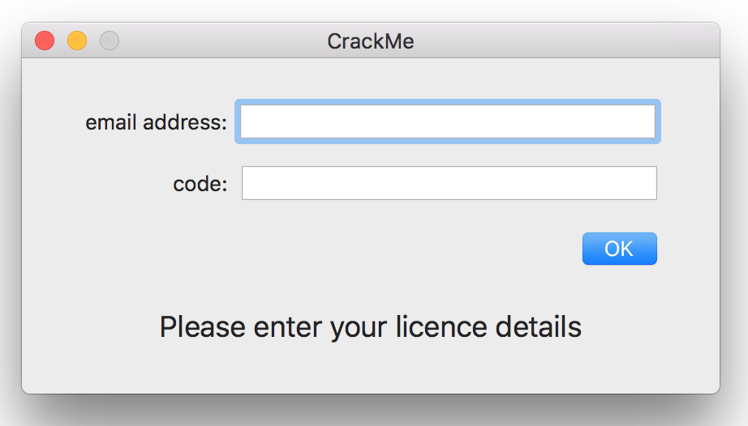
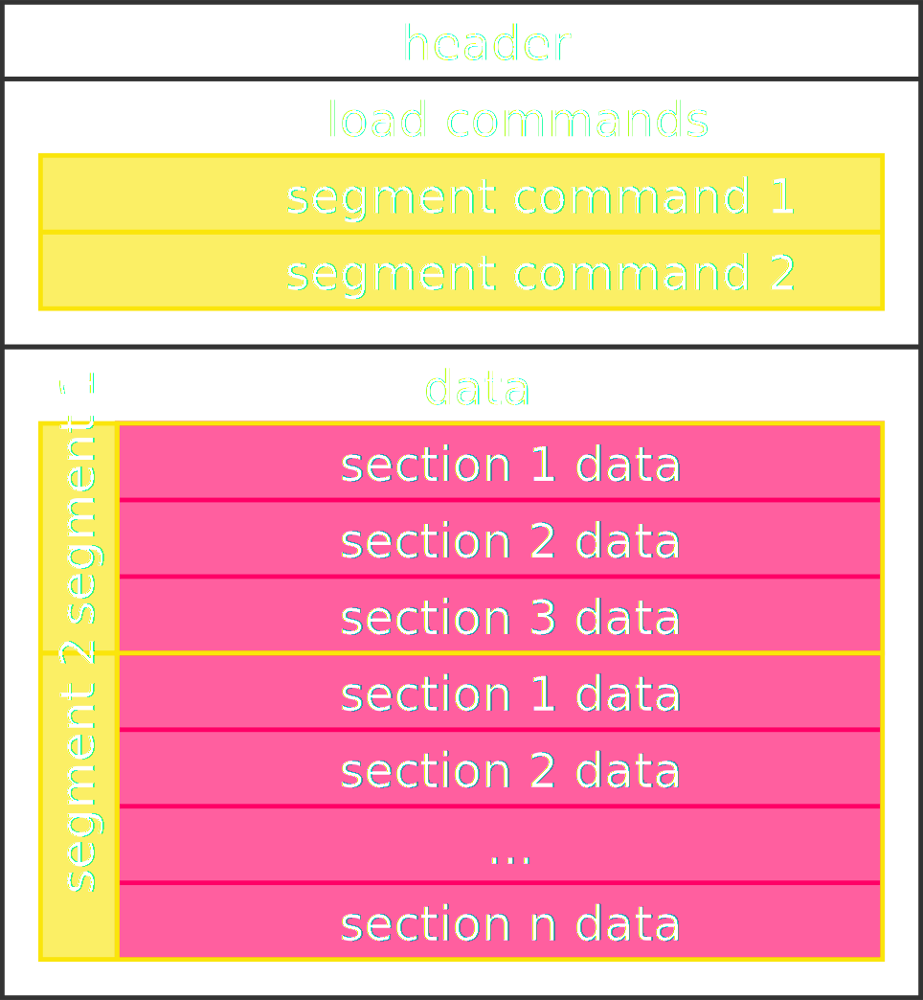
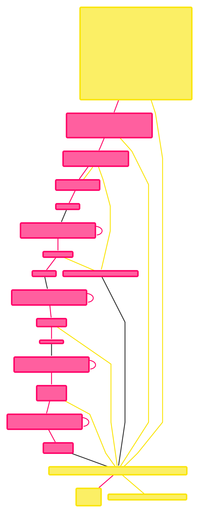

Binary Reverse Engineering
Binary
Reverse Engineering
Types of binaries
- Executable files output by a compiler/linker:
Mach-O (Apple), ELF (Bell Labs), PE (Microsoft), …
- Bytecode meant to be executed by a Virtual Machine: .class (Java), .pyc (Python), …
Why?
- What the code does, when the source is not available.
- How a malicious user could take advantage of our code.
- Better protect the secrets: API keys, tokens, …
Is RE legal?
- It usually is as long as:
- you own the software
- you are reversing it to achieve interoperability
Our target

$ file CrackMe.app/Contents/MacOS/CrackMe
CrackMe.app/Contents/MacOS/CrackMe: Mach-O 64-bit executable x86_64
$ sw_vers -productVersion
10.12.4 # macOS Sierra
What's in an Mach-O executable file

What's in an Mach-O executable file
$ otool -l CrackMe.app/Contents/MacOS/CrackMe | grep -i segment -A3
cmd LC_SEGMENT_64
cmdsize 72
segname __PAGEZERO
vmaddr 0x0000000000000000
--
cmd LC_SEGMENT_64
cmdsize 1112
segname __TEXT
vmaddr 0x0000000100000000
--
cmd LC_SEGMENT_64
cmdsize 1272
segname __DATA
vmaddr 0x0000000100005000
--
cmd LC_SEGMENT_64
cmdsize 72
segname __LINKEDIT
vmaddr 0x0000000100007000
$
What's in an executable file
- Kernel loads segments into memory.
- It passes control to the dynamic linker.
- The dl finds and loads libraries.
- Jump to the program entry point.
Process address space
- The memory layout is virtual.
- Processes think they are alone on the system, with all the memory available to themselves.
- The memory management unit takes care of mapping virtual pages of memory to physical ones.
Back to the target
How would the validation work?

$ strings CrackMe.app/Contents/MacOS/CrackMe
[..]
email address is invalid
invalid licence code
thanks for registering
[A-Z0-9a-z._%+-]+@[A-Za-z0-9.-]+\.[A-Za-z]{2,}
[..]
Run the target under a debugger
$ lldb CrackMe.app/Contents/MacOS/CrackMe
(lldb) process launch --stop-at-entry
Process 97427 stopped
* thread #1: tid = 0x8d1bc4, 0x000000010000d000 dyld`_dyld_start, stop reason = signal SIGSTOP
frame #0: 0x000000010000d000 dyld`_dyld_start
dyld`_dyld_start:
-> 0x10000d000 <+0>: popq %rdi
0x10000d001 <+1>: pushq $0x0
0x10000d003 <+3>: movq %rsp, %rbp
0x10000d006 <+6>: andq $-0x10, %rsp
Process 97427 launched: '/Users/gcioffi/Documents/code/binary-re-intro/CrackMe.app/Contents/MacOS/CrackMe' (x86_64)
(lldb) settings set target.x86-disassembly-flavor intel
(lldb)
launch lldb
stop at the entry point
we land somewhere in the dynamic linker code
change disassembly syntax format
Target address space
(lldb) target modules list
[ 0] 37E07D4F-8E26-3B11-B792-6E2AA02B515B CrackMe[0x0000000100000000] /Users/gcioffi/Documents/code/binary-re-intro/CrackMe.app/Contents/MacOS/CrackMe
[ 1] 8239D0D7-66F6-3C44-A77F-586F74525DA3 0x000000010000c000 /usr/lib/dyld
[ 2] 49C8DA40-9E5B-33F9-B092-F50115B59E95 Foundation[0x0000000000000000] /System/Library/Frameworks/Foundation.framework/Versions/C/Foundation
[..]
[204] 9660B91D-0C39-385A-96CB-268345035995 libCoreVMClient.dylib[0x0000000000000000] /System/Library/Frameworks/OpenGL.framework/Versions/A/Libraries/libCoreVMClient.dylib
(lldb)
gives a list of all the external modules (to be) loaded in the process address space
virtual memory address
if the address is 0x0, the module hasn't been loaded yet
Target sections
(lldb) target modules dump sections CrackMe
Sections for '/Users/gcioffi/Documents/code/binary-re-intro/CrackMe.app/Contents/MacOS/CrackMe' (x86_64):
SectID Type Load Address Perm File Off. File Size Flags Section Name
---------- ---------------- --------------------------------------- ---- ---------- ---------- ---------- ----------------------------
0x00000100 container [0x0000000000000000-0x0000000100000000)* --- 0x00000000 0x00000000 0x00000000 CrackMe.__PAGEZERO
0x00000200 container [0x0000000100000000-0x0000000100005000)* r-x 0x00000000 0x00005000 0x00000000 CrackMe.__TEXT
0x00000001 code [0x0000000100001f00-0x000000010000390a)* r-x 0x00001f00 0x00001a0a 0x80000400 CrackMe.__TEXT.__text
0x00000002 code [0x000000010000390a-0x0000000100003a0c)* r-x 0x0000390a 0x00000102 0x80000408 CrackMe.__TEXT.__stubs
0x00000003 code [0x0000000100003a0c-0x0000000100003bca)* r-x 0x00003a0c 0x000001be 0x80000400 CrackMe.__TEXT.__stub_helper
0x00000004 data-cstr [0x0000000100003bd0-0x00000001000042ba)* r-x 0x00003bd0 0x000006ea 0x00000002 CrackMe.__TEXT.__cstring
0x00000005 regular [0x00000001000042c0-0x00000001000043fa)* r-x 0x000042c0 0x0000013a 0x00000000 CrackMe.__TEXT.__const
0x00000006 data-cstr [0x00000001000043fa-0x0000000100004b26)* r-x 0x000043fa 0x0000072c 0x00000002 CrackMe.__TEXT.__objc_methname
0x00000007 regular [0x0000000100004b30-0x0000000100004c7a)* r-x 0x00004b30 0x0000014a 0x00000000 CrackMe.__TEXT.__swift3_typeref
0x00000008 regular [0x0000000100004c80-0x0000000100004cc3)* r-x 0x00004c80 0x00000043 0x00000000 CrackMe.__TEXT.__swift3_reflstr
0x00000009 regular [0x0000000100004cc4-0x0000000100004d18)* r-x 0x00004cc4 0x00000054 0x00000000 CrackMe.__TEXT.__swift3_fieldmd
0x0000000a regular [0x0000000100004d18-0x0000000100004d60)* r-x 0x00004d18 0x00000048 0x00000000 CrackMe.__TEXT.__swift3_assocty
0x0000000b regular [0x0000000100004d60-0x0000000100004da4)* r-x 0x00004d60 0x00000044 0x00000000 CrackMe.__TEXT.__swift3_capture
0x0000000c compact-unwind [0x0000000100004da4-0x0000000100004ea8)* r-x 0x00004da4 0x00000104 0x00000000 CrackMe.__TEXT.__unwind_info
0x0000000d eh-frame [0x0000000100004ea8-0x0000000100004ff8)* r-x 0x00004ea8 0x00000150 0x00000000 CrackMe.__TEXT.__eh_frame
0x00000300 container [0x0000000100005000-0x0000000100007000)* rw- 0x00005000 0x00002000 0x00000000 CrackMe.__DATA
0x0000000e data-ptrs [0x0000000100005000-0x0000000100005010)* rw- 0x00005000 0x00000010 0x00000006 CrackMe.__DATA.__nl_symbol_ptr
0x0000000f data-ptrs [0x0000000100005010-0x00000001000050b0)* rw- 0x00005010 0x000000a0 0x00000006 CrackMe.__DATA.__got
0x00000010 data-ptrs [0x00000001000050b0-0x0000000100005208)* rw- 0x000050b0 0x00000158 0x00000007 CrackMe.__DATA.__la_symbol_ptr
0x00000011 regular [0x0000000100005210-0x0000000100005268)* rw- 0x00005210 0x00000058 0x00000000 CrackMe.__DATA.__const
0x00000012 data-ptrs [0x0000000100005268-0x0000000100005270)* rw- 0x00005268 0x00000008 0x10000000 CrackMe.__DATA.__objc_classlist
0x00000013 regular [0x0000000100005270-0x0000000100005288)* rw- 0x00005270 0x00000018 0x00000000 CrackMe.__DATA.__objc_protolist
0x00000014 regular [0x0000000100005288-0x0000000100005290)* rw- 0x00005288 0x00000008 0x00000000 CrackMe.__DATA.__objc_imageinfo
0x00000015 data-ptrs [0x0000000100005290-0x0000000100005f80)* rw- 0x00005290 0x00000cf0 0x00000000 CrackMe.__DATA.__objc_const
0x00000016 data-cstr-ptr [0x0000000100005f80-0x0000000100005fa8)* rw- 0x00005f80 0x00000028 0x10000005 CrackMe.__DATA.__objc_selrefs
0x00000017 regular [0x0000000100005fa8-0x0000000100005fc0)* rw- 0x00005fa8 0x00000018 0x00000000 CrackMe.__DATA.__objc_protorefs
0x00000018 data-ptrs [0x0000000100005fc0-0x0000000100005fd8)* rw- 0x00005fc0 0x00000018 0x10000000 CrackMe.__DATA.__objc_classrefs
0x00000019 data-ptrs [0x0000000100005fd8-0x00000001000060f8)* rw- 0x00005fd8 0x00000120 0x00000000 CrackMe.__DATA.__objc_data
0x0000001a data [0x00000001000060f8-0x0000000100006200)* rw- 0x000060f8 0x00000108 0x00000000 CrackMe.__DATA.__data
0x0000001b zero-fill [0x0000000100006200-0x0000000100006208)* rw- 0x00000000 0x00000000 0x00000001 CrackMe.__DATA.__common
0x0000001c zero-fill [0x0000000100006208-0x0000000100006210)* rw- 0x00000000 0x00000000 0x00000001 CrackMe.__DATA.__bss
0x00000400 container [0x0000000100007000-0x000000010000c000)* r-- 0x00007000 0x000043c0 0x00000000 CrackMe.__LINKEDIT
(lldb)
only show the sections belonging to the CrackMe file
crackMe code and data seem to have been loaded in mem starting at offset 0x100000000…
...and ending at offset 0x100006210
How do we narrow down the search?
Look for the error message
Can we find the error message in the identified memory range?
(lldb) memory find -s 'invalid licence' 0x0000000100000000 0x0000000100006210
data found at location: 0x100003d50
0x100003d50: 69 6e 76 61 6c 69 64 20 6c 69 63 65 6e 63 65 20 invalid licence
0x100003d60: 63 6f 64 65 00 00 00 00 00 00 00 00 00 00 00 00 code............
(lldb)
yes!
Add a breakpoint on memory read
(lldb) watchpoint set expression -w read -s 1 -- 0x100003d50
Watchpoint created: Watchpoint 1: addr = 0x100003d50 size = 1 state = enabled type = r
new value: 2334106421097295465
(lldb) c
Process 16448 resuming
Watchpoint 1 hit:
old value: 2334106421097295465
new value: 2334106421097295465
Process 16448 stopped
* thread #1: tid = 0x94c9dc, 0x00000001002dc177 libswiftCore.dylib;`function signature specialization <preserving fragile attribute, Arg[3] = Dead> of generic specialization <preserving fragile attribute, Swift.UInt8 with Swift.UInt8 : Swift._StringElement in Swift, Swift.UInt16 with Swift.UInt16 : Swift._StringElement in Swift> of static Swift.UTF16._copy <A, B where A: Swift._StringElement, B: Swift._StringElement> (source : Swift.UnsafeMutablePointer<A>, destination : Swift.UnsafeMutablePointer<B>, count : Swift.Int) -> () + 55, queue = 'com.apple.main-thread', stop reason = watchpoint 1
frame #0: 0x00000001002dc177 libswiftCore.dylib`function signature specialization <preserving fragile attribute, Arg[3] = Dead> of generic specialization <preserving fragile attribute, Swift.UInt8 with Swift.UInt8 : Swift._StringElement in Swift, Swift.UInt16 with Swift.UInt16 : Swift._StringElement in Swift> of static Swift.UTF16._copy <A, B where A: Swift._StringElement, B: Swift._StringElement> (source : Swift.UnsafeMutablePointer<A>, destination : Swift.UnsafeMutablePointer<B>, count : Swift.Int) -> () + 55
libswiftCore.dylib`function signature specialization <preserving fragile attribute, Arg[3] = Dead> of generic specialization <preserving fragile attribute, Swift.UInt8 with Swift.UInt8 : Swift._StringElement in Swift, Swift.UInt16 with Swift.UInt16 : Swift._StringElement in Swift> of static Swift.UTF16._copy <A, B where A: Swift._StringElement, B: Swift._StringElement> (source : Swift.UnsafeMutablePointer<A>, destination : Swift.UnsafeMutablePointer<B>, count : Swift.Int) -> ():
-> 0x1002dc177 <+55>: mov word ptr [rsi + 2*r8], ax
0x1002dc17c <+60>: cmp rcx, rdx
0x1002dc17f <+63>: mov r8, rcx
0x1002dc182 <+66>: jne 0x1002dc160 ; <+32>
(lldb)
set the watchpoint to the location of the "invalid code" message
continue and input a random email and key in the CrackMe app
the watchpoint triggers, somewhere deep in a Swift library
Backtrace
(lldb) bt 10
* thread #1: tid = 0x989de1, 0x00000001002dc177 libswiftCore.dylib`function signature specialization <preserving fragile attribute, Arg[3] = Dead> of generic specialization <preserving fragile attribute, Swift.UInt8 with Swift.UInt8 : Swift._StringElement in Swift, Swift.UInt16 with Swift.UInt16 : Swift._StringElement in Swift> of static Swift.UTF16._copy <A, B where A: Swift._StringElement, B: Swift._StringElement> (source : Swift.UnsafeMutablePointer<A>, destination : Swift.UnsafeMutablePointer<B>, count : Swift.Int) -> () + 55, queue = 'com.apple.main-thread', stop reason = watchpoint 1
* frame #0: 0x00000001002dc177 libswiftCore.dylib`function signature specialization <preserving fragile attribute, Arg[3] = Dead> of generic specialization <preserving fragile attribute, Swift.UInt8 with Swift.UInt8 : Swift._StringElement in Swift, Swift.UInt16 with Swift.UInt16 : Swift._StringElement in Swift> of static Swift.UTF16._copy <A, B where A: Swift._StringElement, B: Swift._StringElement> (source : Swift.UnsafeMutablePointer<A>, destination : Swift.UnsafeMutablePointer<B>, count : Swift.Int) -> () + 55
frame #1: 0x00007fffcc7d03e9 Foundation`-[NSPlaceholderString initWithString:] + 243
frame #2: 0x00007fffc888220d AppKit`-[NSCell _objectValue:forString:errorDescription:] + 289
frame #3: 0x00007fffc8882042 AppKit`-[NSCell setStringValue:] + 41
frame #4: 0x00007fffc8930cee AppKit`-[NSControl setStringValue:] + 135
frame #5: 0x00000001000025e4 CrackMe`___lldb_unnamed_symbol14$$CrackMe + 612
frame #6: 0x00000001000026c7 CrackMe`___lldb_unnamed_symbol15$$CrackMe + 151
frame #7: 0x00007fffe06ed3a7 libsystem_trace.dylib`_os_activity_initiate_impl + 53
frame #8: 0x00007fffc8fd2791 AppKit`-[NSApplication(NSResponder) sendAction:to:from:] + 456
frame #9: 0x00007fffc8ab7000 AppKit`-[NSControl sendAction:to:] + 86
(lldb) watchpoint disable
All watchpoints disabled. (1 watchpoints)
(lldb) b 0x1000025e4
Breakpoint 1: where = CrackMe`___lldb_unnamed_symbol14$$CrackMe + 612, address = 0x00000001000025e4
(lldb) c
0x1000025e4 is the address we'll eventually return to
set a breakpoint there and try the same email/key combo again
continue…
Getting close
(lldb) di -f
CrackMe`___lldb_unnamed_symbol14$$CrackMe:
0x100002380 <+0>: push rbp
0x100002381 <+1>: mov rbp, rsp
0x100002384 <+4>: push r15
[..]
0x1000025b7 <+567>: call 0x100003922 ; symbol stub for: objc_retain
0x1000025bc <+572>: lea rdi, [rip + 0x178d] ; "invalid licence code"
0x1000025c3 <+579>: mov esi, 0x14
0x1000025c8 <+584>: xor edx, edx
0x1000025ca <+586>: call 0x1000039d6 ; symbol stub for: (extension in Foundation):Swift.String._bridgeToObjectiveC () -> __ObjC.NSString
0x1000025cf <+591>: mov r14, rax
0x1000025d2 <+594>: mov rsi, qword ptr [rip + 0x39b7] ; "setStringValue:"
0x1000025d9 <+601>: mov rdi, rbx
0x1000025dc <+604>: mov rdx, r14
0x1000025df <+607>: call 0x100003910 ; symbol stub for: objc_msgSend
-> 0x1000025e4 <+612>: mov rdi, rbx
[..]
disassemble the current frame (the current function)
this is our "invalid…" message!
converts a Swift string to an ObjC string?
display the message on screen?
remember the "invalid…" message is loaded somewhere around <+572>
Look further up in the disassembly
0x100002559 <+473>: cmp byte ptr [rbp - 0x50], 0x0
0x10000255d <+477>: je 0x1000025af ; <+559>
0x10000255f <+479>: test rbx, rbx
0x100002562 <+482>: je 0x100002623 ; <+675>
0x100002568 <+488>: mov rdi, rbx
0x10000256b <+491>: call 0x100003922 ; symbol stub for: objc_retain
0x100002570 <+496>: lea rdi, [rip + 0x17f9] ; "thanks for registering"
0x100002577 <+503>: mov esi, 0x16
0x10000257c <+508>: jmp 0x1000025c8 ; <+584>
0x10000257e <+510>: add r13, qword ptr [rip + 0x3bb3]
0x100002585 <+517>: mov rdi, r13
0x100002588 <+520>: call 0x1000039be ; symbol stub for: swift_unknownWeakLoadStrong
0x10000258d <+525>: mov rbx, rax
0x100002590 <+528>: test rbx, rbx
0x100002593 <+531>: je 0x100002621 ; <+673>
0x100002599 <+537>: mov rdi, rbx
0x10000259c <+540>: call 0x100003922 ; symbol stub for: objc_retain
0x1000025a1 <+545>: lea rdi, [rip + 0x1788] ; "email address is invalid"
0x1000025a8 <+552>: mov esi, 0x18
0x1000025ad <+557>: jmp 0x1000025c8 ; <+584>
0x1000025af <+559>: test rbx, rbx
0x1000025b2 <+562>: je 0x100002625 ; <+677>
0x1000025b4 <+564>: mov rdi, rbx
0x1000025b7 <+567>: call 0x100003922 ; symbol stub for: objc_retain
0x1000025bc <+572>: lea rdi, [rip + 0x178d] ; "invalid licence code"
look at all the jump targets trying to find one that's slightly before <+572>
need to convince the code to get to here!
this is reasonably close to <+572>
if *((uint8_t *)(rpb - 0x50)) == 0, jump
The validate(email,key) call?
0x1000024f0 <+368>: lea rsi, [r12 + 0x20]
0x1000024f5 <+373>: mov rdi, qword ptr [rbp - 0x50]
0x1000024f9 <+377>: call 0x100001f00 ; ___lldb_unnamed_symbol1$$CrackMe
0x1000024fe <+382>: mov byte ptr [rbp - 0x50], al
[..]
0x100002559 <+473>: cmp byte ptr [rbp - 0x50], 0x0
0x10000255d <+477>: je 0x1000025af ; <+559>
[..]
0x1000025af <+559>: test rbx, rbx
0x1000025b2 <+562>: je 0x100002625 ; <+677>
0x1000025b4 <+564>: mov rdi, rbx
0x1000025b7 <+567>: call 0x100003922 ; symbol stub for: objc_retain
0x1000025bc <+572>: lea rdi, [rip + 0x178d] ; "invalid licence code"
(lldb) breakpoint delete About to delete all breakpoints, do you want to do that?: [Y/n] Y
All breakpoints removed. (1 breakpoint)
(lldb) b 0x1000024f9
Breakpoint 6: where = CrackMe`___lldb_unnamed_symbol14$$CrackMe + 377, address = 0x00000001000024f9
(lldb) c
Process 25670 resuming
place breakpoint here
Look around
0x1000024da <+346>: mov rsi, r12
0x1000024dd <+349>: mov rdx, r14
0x1000024e0 <+352>: call 0x100002980 ; ___lldb_unnamed_symbol22$$CrackMe
0x1000024e5 <+357>: mov r12, rax
0x1000024e8 <+360>: mov rdi, r14
0x1000024eb <+363>: call 0x1000039a0 ; symbol stub for: swift_unknownRelease
0x1000024f0 <+368>: lea rsi, [r12 + 0x20]
0x1000024f5 <+373>: mov rdi, qword ptr [rbp - 0x50]
-> 0x1000024f9 <+377>: call 0x100001f00 ; ___lldb_unnamed_symbol1$$CrackMe
0x1000024fe <+382>: mov byte ptr [rbp - 0x50], al
(lldb) expression -f p -- (char*)$rdi
(char *) $75 = 0x0000000100d3d120 "a@b.com"
(lldb) expression -f p -- (char*)$rsi
(char *) $76 = 0x0000000100d23d40 "54321"
no function parameters are being pushed onto the stack
email and key are passed to the call using the registers
and this must be the "key is valid" boolean
The registered/not registered branch
(lldb) di -f -b
0x100002559 <+473>: 80 7d b0 00 cmp byte ptr [rbp - 0x50], 0x0
0x10000255d <+477>: 74 50 je 0x1000025af ; <+559>
-b also shows the opcodes
the 0x0 constant is stored here
Patch the binary
$ bbe -s -b '/\x80\x7d\xb0\x00/:6' \
-e 'p H' -e 'A \n' \
CrackMe.app/Contents/MacOS/CrackMe
x80 x7d xb0 x00 x74 x50
$ bbe -b '/\x80\x7d\xb0\x00/:6' \
-e 's/\x00/\x01/' \
-o CrackMe.app/Contents/MacOS/CrackMeCracked \
CrackMe.app/Contents/MacOS/CrackMe
$ CrackMe.app/Contents/MacOS/CrackMeCracked
$
the disassembled instruction we saw before, it occurs only once in the whole binary
flip a bit
thanks for registering!

Key Validation
- 0x100001f00, a.k.a.
ƒ(email, key) → bool
- 330 bytes, 99 asm instructions
- What can we guess by looking at the Control Flow Graph on the left?
Assembly
0x100001f26 lea rdx, qword [rbp+var_30] ; argument "md" for method imp___stubs__CC_MD5
0x100001f2a mov rdi, rbx ; argument "data" for method imp___stubs__CC_MD5
0x100001f2d mov esi, eax ; argument "len" for method imp___stubs__CC_MD5
0x100001f2f call imp___stubs__CC_MD5
0x100001f34 mov r9d, dword [rbp+var_30]
0x100001f38 lea r8, qword [0x100003bd0] ; "%u", argument #5 for method imp___stubs____snprintf_chk
0x100001f3f xor ebx, ebx
0x100001f41 lea rdi, qword [rbp+var_50] ; argument #1 for method imp___stubs____snprintf_chk
0x100001f45 mov esi, 0x14 ; argument #2 for method imp___stubs____snprintf_chk
0x100001f4a mov edx, 0x0 ; argument #3 for method imp___stubs____snprintf_chk
0x100001f4f mov ecx, 0x14 ; argument #4 for method imp___stubs____snprintf_chk
0x100001f54 xor eax, eax
0x100001f56 call imp___stubs____snprintf_chk
0x100001f5b mov rdi, r14 ; argument "s" for method imp___stubs__strlen
0x100001f5e call imp___stubs__strlen
0x100001f63 cmp rax, 0x18
0x100001f67 jne loc_100002037
The first rectangle in the CFG
Assembly decompiled to C
int sub_100001f00(int arg0, int arg1) {
r14 = arg1;
var_20 = *___stack_chk_guard;
// (lldb) expr (char*)$rdi \n (char *) $9 = 0x0000000100a90950 "a@b.com"
CC_MD5(arg0, strlen(arg0), var_30);
// (lldb) memory read -f h -s 4 -- '$rbp - 0x30'
// 0x7fff5fbfb660: 0xe8207a35 0xd6696ec5 0x234d73f9 0xe81795ef
rbx = 0x0;
__snprintf_chk(var_50, 0x14, 0x0, 0x14,
"%u", var_30);
// (lldb) p (char*)($rbp - 0x50)
// (char *) $29 = 0x00007fff5fbfe220 "3894442549"
if (strlen(r14) != 0x18) goto loc_100002037;
Apple CommonCrypto MD5
key — it's not an int, it's a char* but the decompiler couldn't tell
the key length must be 0x18 = 24 characters!
return false and exit
email, it's being MD5-hashed
the hash (128 bits) is stored in var_30
$ echo -n a@b.com | md5
357a20e8c56e69d6f9734d23ef9517e8
the low 32 bits of the hash are printed (as an unsigned integer) into var_50
0xe8207a35 = 3894442549
m = md5.new()
m.update(email)
digest = m.digest()
email_hash = struct.unpack('I', digest[0:4])[0]
return "%u" % email_hash
Key start
// r14 = key
// var_50 = md5(email), truncated and converted to string
if (strncmp(r14, var_50, strlen(var_50)) != 0x0) goto loc_100002037;
The key must start with the truncated email hash
if not key.startswith(email_hash_string):
return False, 'must start with the email hash'
A for loop
// r14 = key
rbx = 0x0;
loc_100001f91:
rax = *(int8_t *)(r14 + rbx) + 0xd0;
if ((rax & 0xff) > 0x9) goto loc_100002035;
*(int8_t *)(rbp + rbx - 112) = rax;
rbx = rbx + 0x1;
if (rbx < 0x18) goto loc_100001f91;
for(rbx=0; rbx<24; rbx++) { … }
0xd0 == 208
(key[rbx] + 208) % 256
208 == 256 - ord('0')
(ord('1') - 256 - ord('0')) % 256 == 1
ord(key[rbx]) - ord('0') == int(key[rbx])
- Convert every character in the key to a number.
- Make sure 0 ≤ number ≤ 9.
- Store the digits in an array.
- The array starts at rpb - 112
digits = []
for c in key:
try:
digits.append(int(c))
except ValueError:
return False, 'must be numerical'
Checksum 1
rax = 0x0;
rcx = 0x0;
do {
rcx = rcx + (*(int8_t *)
(rbp + rax - 102) & 0xff);
rax = rax + 0x1;
} while (rax != 0x5);
if (rcx == 0x15) {
From the previous slide we know that the digits array is based at rpb - 112.
This loop starts at index 10.
# sum of digits at positions 10-14
s = sum(digits[10:15])
if s != 21: # 0x15
return False, 'must contain a predetermined sum'
Checksum 2
rax = 0x1;
rcx = 0x0;
do {
rax = rax * (*(int8_t *)
(rbp + rcx - 97) & 0xff);
rcx = rcx + 0x1;
} while (rcx != 0x5);
if (rax == 0x1e0) {
start at index 15
# product of digits at positions 15-19
p = reduce(operator.mul, digits[15:20], 1)
if p != 480: # 0x1e0
return False, 'must contain a predetermined product'
Checksum 3
rbx = 0x0;
rax = 0x0;
do {
rbx = rbx + (*(int8_t *)(rbp + rax - 112) & 0xff);
rax = rax + 0x2;
} while (rax < 0x18);
COND = (rbx & 0xf) != 0x3;
rbx = 0x0;
if (!COND) {
start at index 0
visit all the digits in the array
at even indexes
# accumulate digits at even indexes
acc = 0
for i in xrange(0, len(digits), 2):
acc += digits[i]
if acc % 16 != 3:
return False, 'sum of even index digits % 16 must be == 3'
Checksum 4
rax = 0x0;
rcx = 0x1;
do {
rax = rax + (*(int8_t *)(rbp + rcx - 112) & 0xff);
rcx = rcx + 0x2;
} while (rcx < 0x18);
rbx = (rax & 0xf) == 0x7 ? 0x1 : 0x0;
start at index 1, visit all the digits at odd indexes
# accumulate digits at odd indexes
acc = 0
for i in xrange(1, len(digits), 2):
acc += digits[i]
if acc % 16 != 7:
return False, 'sum of odd index digits % 16 must be == 7'
return True, ''
rbx == 1 if the key is valid
Z3
- A theorem prover/SMT solver from Microsoft Research.
- If a problem can be expressed as a system of equations/inequalities (predicates)…
- …Z3 can try and find a solution.
keygen-z3.py
import md5
import struct
from z3 import *
def get_email_hash(email):
"""
md5 the email address, keeps the low 32 bits of the digest
returns the stringified hash
"""
m = md5.new()
m.update(email)
digest = m.digest()
email_hash = struct.unpack('I', digest[0:4])[0]
return "%u" % email_hash
def keygen(email):
num_digits = 24
solver = Solver()
d = Ints(' '.join(["d%d" %i for i in range(num_digits)]))
for i in range(num_digits):
solver.add(d[i] >= 0, d[i] <= 9)
email_hash = get_email_hash(email)
for i in range(len(email_hash)):
solver.add(d[i] == int(email_hash[i]))
solver.add(d[10] + d[11] + d[12] + d[13] + d[14] == 21)
solver.add(d[15] * d[16] * d[17] * d[18] * d[19] == 480)
if solver.check() == sat:
model = solver.model()
for i in range(20):
solver.add(d[i] == model.eval(d[i]))
else:
print 'no valid code found :('
digits_sum_even = reduce(lambda a,b: a+b, d[0:len(d):2])
solver.add(digits_sum_even % 16 == 3)
digits_sum_odd = reduce(lambda a,b: a+b, d[1:len(d):2])
solver.add(digits_sum_odd % 16 == 7)
if solver.check() == sat:
model = solver.model()
print 'email: ' + email
print 'code : ' + ''.join([str(model[d[i]]) for i in range(num_digits)])
print
else:
print 'no valid code found :('
if __name__ == '__main__':
keygen('a@b.com')
keygen('example@example.com')
keygen('someuser@somedomain.net')
an array of 24 Symbolic Integers, the digits in the key
every digit is constrained to lie between 0 and 9
key must start with the truncated/stringified hash
"magic" sum/product
helping Z3 by separately solving this part
add constraints for the remaining two checksums
Let's try it out…
angr
- Combines a system emulator with a constraint solver.
- Can "explore" a binary, tracking all the possible execution paths.
- Paths can be pruned depending on constraints supplied by the user or figured out by angr itself.
keygen-angr.py
import unicorn
import simuvex
import angr
import md5
def email_hash(email):
m = md5.new()
m.update(email)
return m.digest()
VALIDATE_FUNCTION_ADDR = 0x100001f00
EMAIL = "a@b.com\x00"
EMAIL_HASH = email_hash(EMAIL.rstrip(b'\0'))
KEY_NUM_DIGITS = 24
def cc_md5(state):
# rdx "md" for method imp___stubs__CC_MD5
state.memory.store(state.regs.rdx, state.se.BVV(EMAIL_HASH, len(EMAIL_HASH)*8))
def strlen(state):
buff = state.se.any_str(state.memory.load(state.regs.rdi, 1024))
term_idx = buff.find(b'\0')
state.regs.rax = term_idx
def snprintf(state):
# rdi argument #1 for method imp___stubs____snprintf_chk
# esi argument #2 for method imp___stubs____snprintf_chk
# edx argument #3 for method imp___stubs____snprintf_chk
# ecx argument #4 for method imp___stubs____snprintf_chk
# r8 "%u", argument #5 for method imp___stubs____snprintf_chk
# r9d [rbp+var_30] md5 hash
assert state.se.any_str(state.memory.load(state.regs.r8, 2)) == '%u'
string = "%u\x00" % state.se.any_int(state.regs.r9)
string_bvv = state.se.BVV(string, len(string) * 8)
state.memory.store(state.regs.rdi, string_bvv)
def strncmp_copy_hash(state):
n = state.regs.rdx
s2 = state.se.any_str(state.memory.load(state.regs.rsi, n)).rstrip(b'\0')
string_bvv = state.se.BVV(s2, len(s2) * 8)
state.memory.store(state.regs.rdi, string_bvv)
s1 = state.se.any_str(state.memory.load(state.regs.rdi, n)).rstrip(b'\0')
s2 = state.se.any_str(state.memory.load(state.regs.rsi, n)).rstrip(b'\0')
if s1 == s2:
state.regs.eax = 0
else:
state.regs.eax = 1
p = angr.Project('CrackMe.app/Contents/MacOS/CrackMe', load_options={'auto_load_libs':False})
state = p.factory.blank_state(addr=VALIDATE_FUNCTION_ADDR,
remove_options={simuvex.o.LAZY_SOLVES})
# (lldb) expression -f p -- (char*)$rdi
# (char *) $75 = 0x0000000100d3d120 "a@b.com"
EMAIL_ADDR = 0x100d3d120
email = state.se.BVV(EMAIL, len(EMAIL) * 8)
state.memory.store(EMAIL_ADDR, email)
# (lldb) expression -f p -- (char*)$rsi
# (char *) $76 = 0x0000000100d23d40 "54321"
KEY_ADDR=0x100d23d40
key = []
for i in xrange(0, KEY_NUM_DIGITS + 1):
b = state.se.BVS('key%d' % i, 8)
key.append(b)
state.memory.store(KEY_ADDR + i, key[-1])
state.add_constraints(b >= ord('0'), b <= ord('9'))
state.memory.store(KEY_ADDR + KEY_NUM_DIGITS, state.se.BVV(b'\0', 8))
# 0x100001f2f <+47>: e8 fa 19 00 00 callq 0x10000392e ; symbol stub for: CC_MD5
p.hook(0x100001f2f, cc_md5, length=5)
# 0000000100001f21 call imp___stubs__strlen
# 0000000100001f5e call imp___stubs__strlen
# 0000000100001f74 call imp___stubs__strlen
p.hook(0x100001f21, strlen, length=5)
p.hook(0x100001f5e, strlen, length=5)
p.hook(0x100001f74, strlen, length=5)
# 0000000100001f56 call imp___stubs____snprintf_chk
p.hook(0x100001f56, snprintf, length=5)
# 0000000100001f82 call imp___stubs__strncmp
p.hook(0x100001f82, strncmp_copy_hash, length=5)
# 000000010000204a call imp___stubs____stack_chk_fail
p.hook(0x10000204a, lambda: None, length=5)
state.regs.rdi=EMAIL_ADDR
state.regs.rsi=KEY_ADDR
path = p.factory.path(state)
pg = p.factory.path_group(path)
pg.explore(find=0x100002033, avoid=(0x100002037,0x100002035))
assert len(pg.found) == 1
# We are @ 0x100002033, but we also want bl (the return value to be non-zero)
# 000000010000202c cmp rax, 0x7
# 0000000100002030 sete bl
# ->0000000100002033 jmp loc_100002037
found = pg.found[0]
# ipdb> found.state.regs.bl
# <BV8 0#7 .. (if (key11_12_8[3:0] == __add__(9, (15 * key13_14_8[3:0]), (15 * key15_16_8[3:0]),
# (15 * key17_18_8[3:0]), (15 * key19_20_8[3:0]), (15 * key21_22_8[3:0]),
# (15 * key23_24_8[3:0]))) then 1 else 0)>
found.state.add_constraints(found.state.regs.bl != 0)
pg = p.factory.path_group(found)
pg.explore(find=0x100002037)
assert len(pg.found) == 1
found = pg.found[0]
# ipdb> found.state.memory.load(KEY_ADDR, KEY_NUM_DIGITS)
#
# ipdb> found.state.se.any_str(found.state.memory.load(KEY_ADDR, KEY_NUM_DIGITS))
# '389444254990075435188938'
# ipdb>
print 'email: ' + EMAIL
print 'code : ' + found.state.se.any_str(found.state.memory.load(KEY_ADDR, KEY_NUM_DIGITS))
print
"raw" hash, not truncated, not stringified
reimplement the library functions used by validate(email,key)
partial reimplementation, only %u is supported
Cheating: before comparing s1 with s2, I copy s2 into s1. The comparison will always succeed.
angr can load a Mach-O executable directly
start at 0x100001f00 and setup the environment for the validate(email,key) call
a concrete bitvector holds the email
model the key as a constrained array of symbolic characters
install the hooks
Setup the inputs to validate(email,key) and go!
ask the explorer to reach a certain location, while avoiding the "return false" branches
one path leading to the desired location is found
note the symbolic expression for bl
the outcome of the function isn't decided yet, it can still be 0 or 1
so we constraint bl != 0 and explore until the end
Did it work?